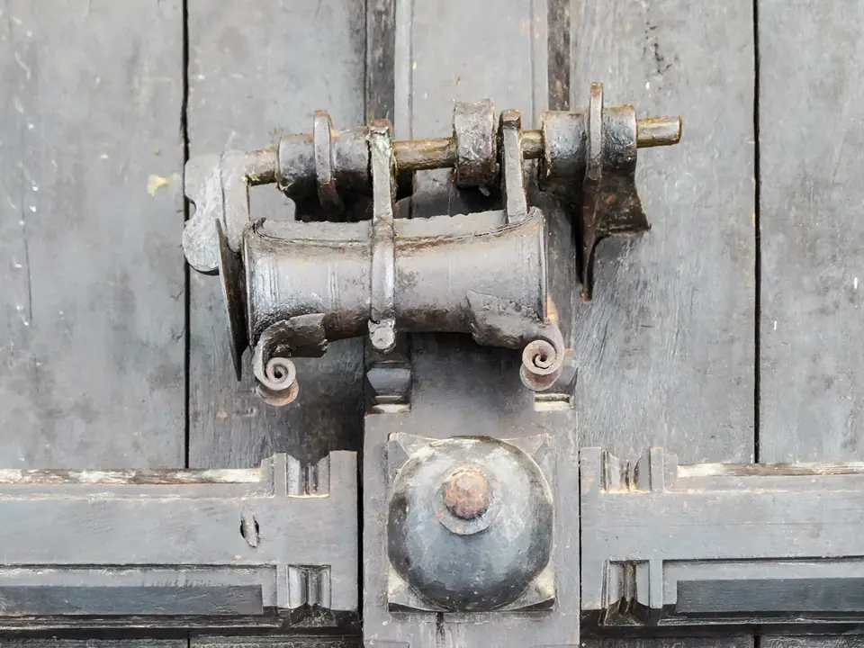
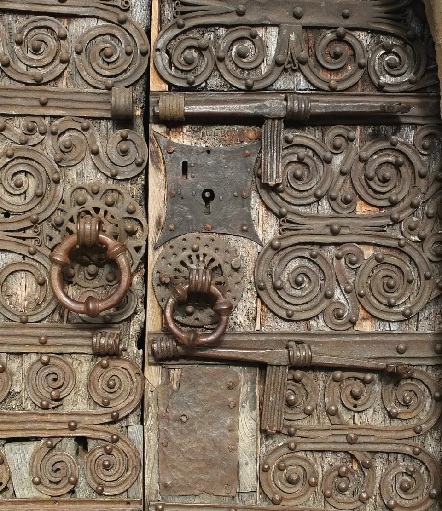
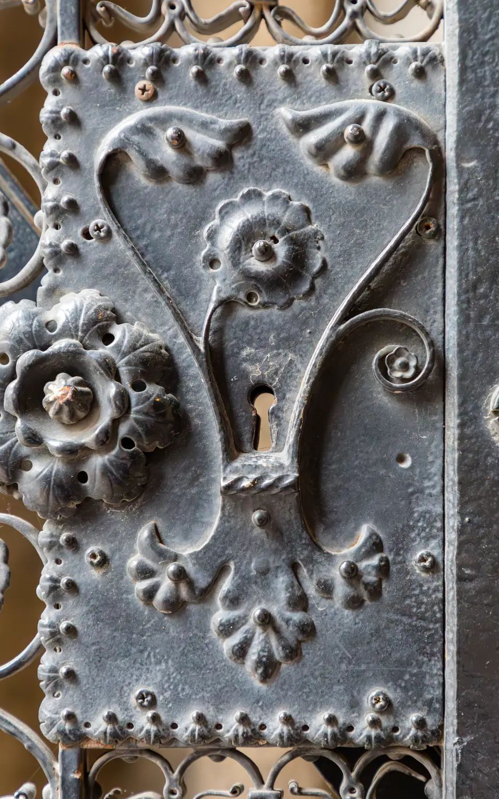

Serrurier à Castelnau-le-Lez
Notre équipe se déplace à Castelnau-le-Lez pour répondre à toutes vos demandes de dépannage serrurier : portes verrouillées par mégarde, clés cassées dans le rotor ou modernisation de crémones.
Serrurerie de précision et dépannage à Castelnau-le-Lez
À Castelnau-le-Lez, nous équipons les pavillons et appartements de serrures multipoints à larder ou en applique, permettant un verrouillage haut et bas synchronisé avec une seule clé de sécurité brevetée.
En cas de défaillance mécanique ou de perte de clé, nous privilégions toujours la solution technique la plus économique et la moins intrusive avant d'envisager le remplacement complet de votre quincaillerie.
Ouverture sans dégât
Ouverture de porte claquée par crochetage fin ou feuille de radio, sans endommager votre bâti.
Cylindre haute sécurité
Remplacement de barillet aux normes A2P avec clés protégées contre la copie non autorisée.
Blindage de porte
Installation de blindage pivot et cornières anti-pinces pour sécuriser efficacement votre entrée.
Nos travaux en images



Autres communes proches desservies
Nous intervenons également dans les localités voisines de Castelnau-le-Lez :
Intervention serrurier à Castelnau-le-Lez
Besoin d'une ouverture de porte ou du remplacement d'une serrure défectueuse à Castelnau-le-Lez ? Contactez notre artisan.
Lundi–vendredi 8 h–18 h
Castelnau-le-Lez et alentours